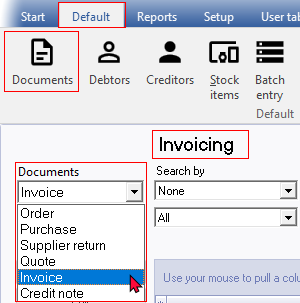
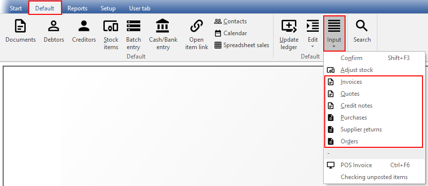
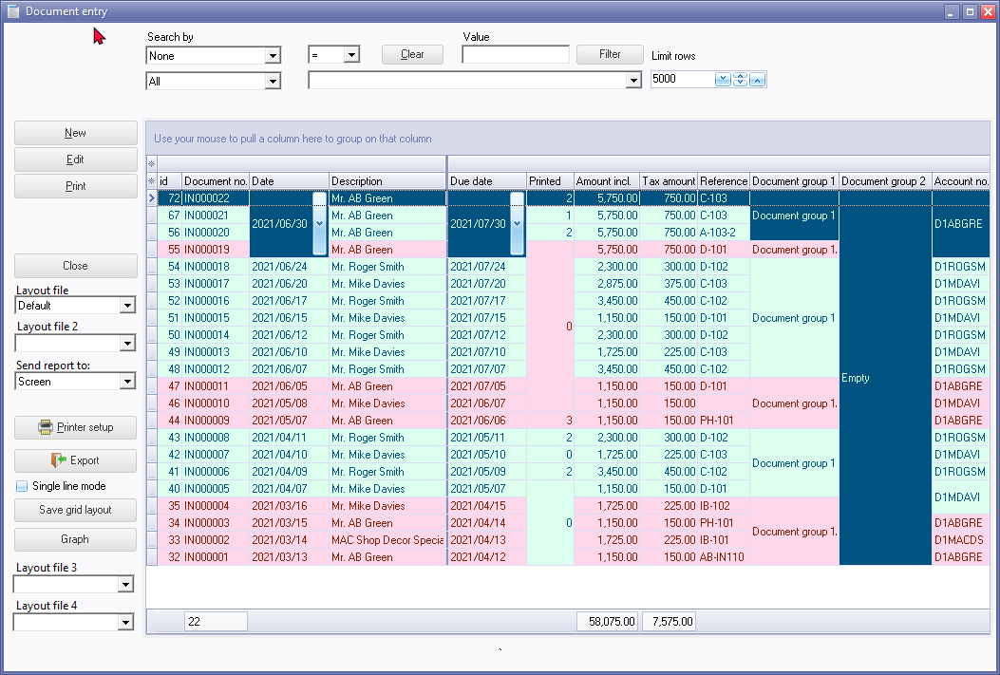
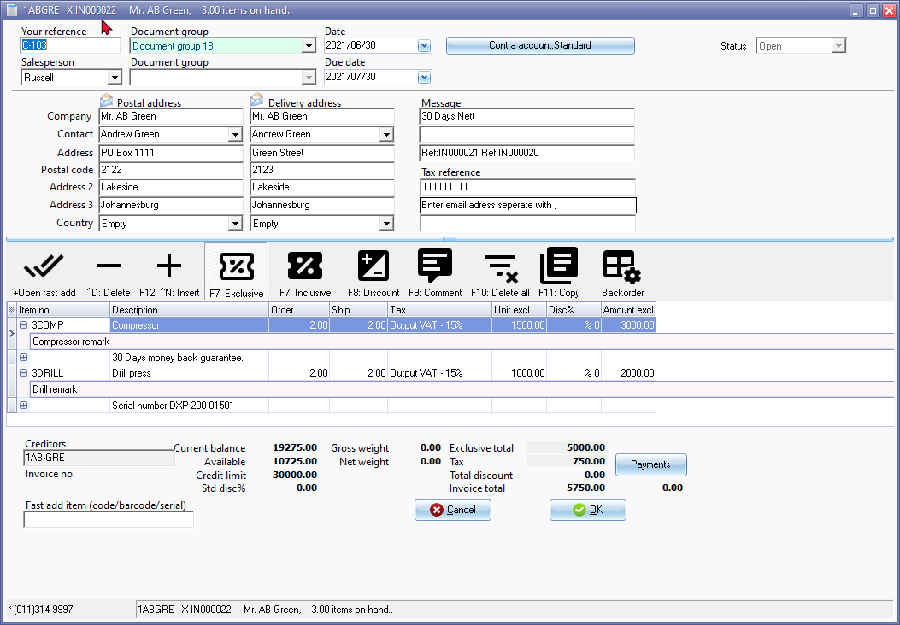
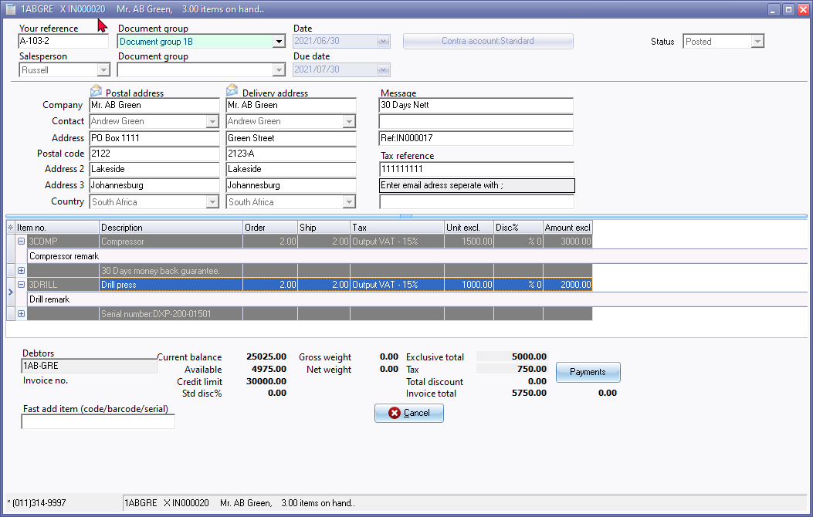

Document types
By default, the Document list screen and the Document entry screens will be launched as a Integral part of the program. If you access the document types from the following options, it will be launched as separate screens:
- Documents icon on the Default ribbon and select the document type.
- Input menu on the Default ribbon. This will launch the selected document type as a separate screens.
Other options to create documents
In addition to process Documents from this option, documents may be also be created from the following options on the Default ribbon:
- Documents - Various context menu options.
- Edit → Repeating invoices
- Calendar (Repeating invoices)
- Calendar (Invoices for hours)
- Calendar (Create invoice - context menu)
- Calendar (Bulk time entry)
- Input → Confirm (Quotes and Orders)
Context menu options to create documents
In addition to this, documents may also be created on quickly from the following context menus:
- Copy document - Create a copy of a selected document.
- Create purchase on default supplier 1 - Create order/s for selected invoice/s). Preferred supplier 1 must be selected for a stock item.
- Convert invoice to order - Create order/s for selected invoice/s).
- Convert to credit note / supplier return (invoice/s will be converted to credit note/s and purchase/s to supplier return/s).
- Copy to - Copy selected document/s - to invoice/s, credit note/s, quote/s, purchase/s, supplier return/s or order/s.
Access document types
The six (6) document types are grouped as follows: 
- Sales documents -
- Quotes - You may need to produce a Quote for your debtors (customers / clients). When the Quote is accepted, you may confirm the quote (convert the Quote to an Invoice).
- Invoices - Invoices are created for debtors (customers / clients). This will generate a source document which can be printed. The Invoice, can be edited before it is posted (updated) to the ledger. When an Invoice is posted (updated) to the ledger, the transactions in the Sales journal will automatically be generated.
- Credit notes - Credit notes are created for debtors (customers / clients) to correct a transaction or an exiting posted Invoice or to cancel the Invoice. This will generate a source document which can be printed. The Credit notes, can be edited before it is posted (updated) to the ledger. When a Credit note is posted (updated) to the ledger, the transactions in the Sales journal (or Sales returns journal) will automatically be generated.
- Purchase documents -
- Orders - You may need to place an Order with any of your creditors (suppliers / vendors). When the goods are received or services are provided, you may confirm the Order against the actual goods received and the original Order. You will do this by converting the Order to a Purchase document.
- Purchases - Purchase documents are created for creditors (suppliers / vendors). This will generate a source document which can be printed. The Purchase document, can be edited before it is posted (updated) to the ledger. When a Purchase document is posted (updated) to the ledger, the transactions in the Purchase journal will automatically be generated.
- Supplier returns - Supplier returns are created creditors (suppliers / vendors) to correct a transaction or an exiting posted Purchase or to cancel the Purchase. This will generate a source document which can be printed. The Supplier returns, can be edited before it is posted (updated) to the ledger. When a Supplier return is posted (updated) to the ledger, the transactions in the Purchase journal (or Purchase returns journal) will automatically be generated.
Access document types - Stand alone screens
You may select a document type on the Input menu on the Default ribbon. This will launch the selected document type in a separate stand alone screens.

The "Document entry" screen, listing the Invoices, is displayed if the Input → Invoices menu is selected, from the Default ribbon.

Unposted document
If an unposted document (Invoice) is selected, the "Document entry" form for the selected unposted document (Invoice) will be displayed as a separate screen:

Posted document
If an posted document (Invoice) is selected, the "Document entry" form for the selected posted document (Invoice) will be displayed as a separate screen:
